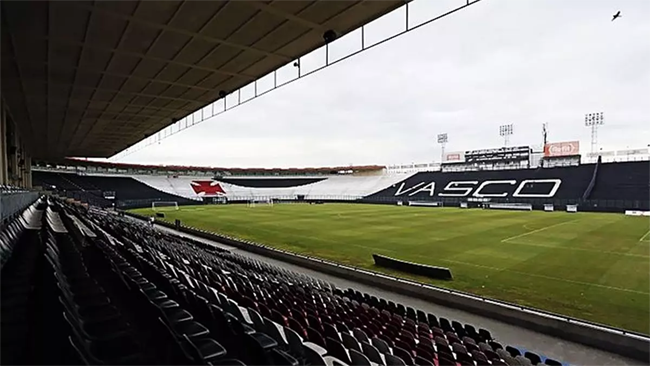
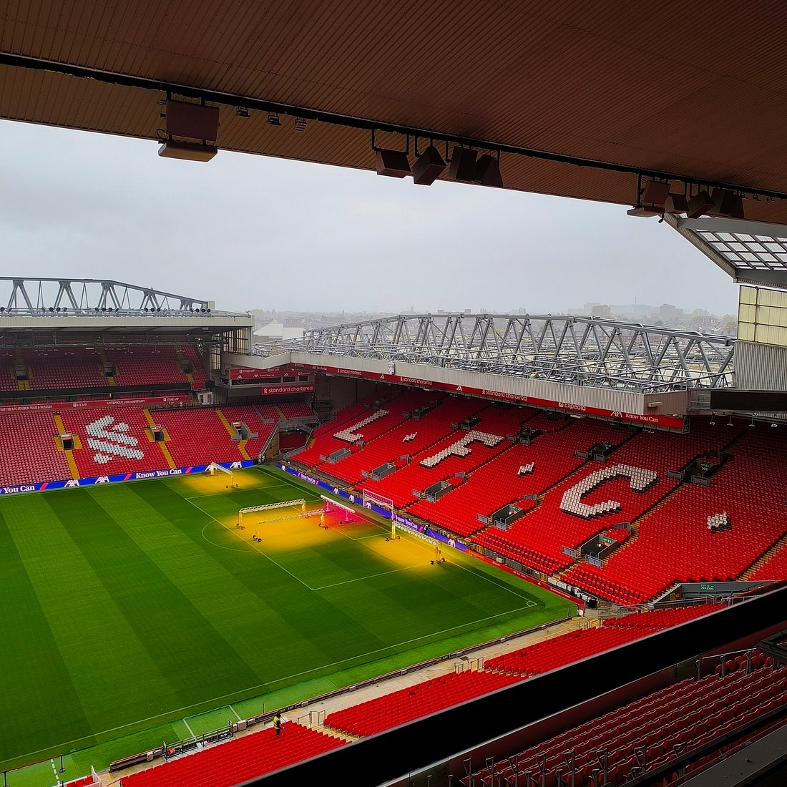
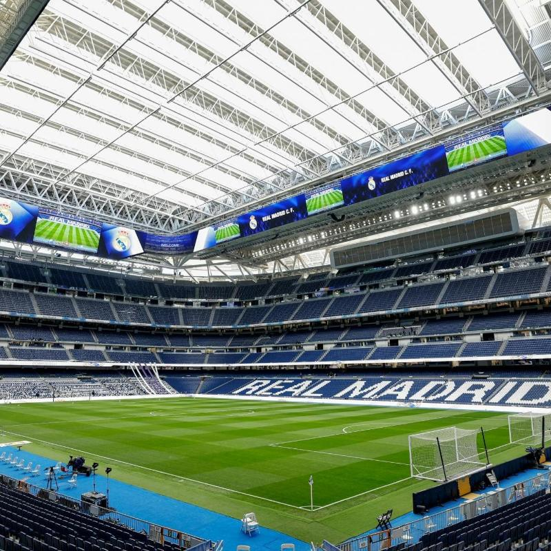

01 — São Januário
PORTFÓLIO CRIATIVO
Role para explorar a seleção.

01 — São Januário

02 — Anfield

03 — Camp Nou

04 — Santiago Bernabéu

05 — Stamford Bridge

06 — Neo Química Arena

07 — San Siro

08 — Allianz Arena

09 — Signal Iduna Park

10 — Parc des Princes
01 — Vasco da Gama
02 — Liverpool
03 - Barcelona
04 - Real madrid
05 — Chelsea
06 — Corinthians
07 — Inter de Milão
08 — Bayern de Munique
09 — Borussia Dortmund
10 — Paris Saint-Germain
Uma base para uma galeria com profundidade, rotação e brilho.